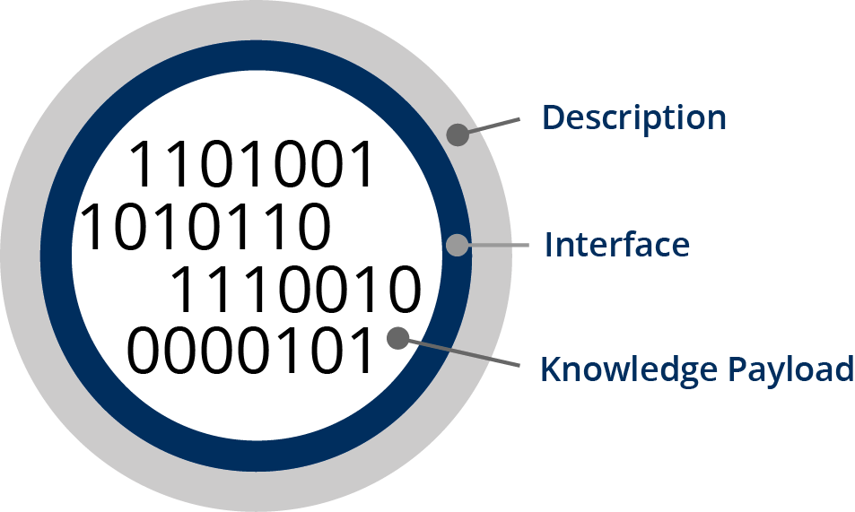

Feature
Knowledge Objects

Knowledge Objects represent knowledge in a modular, computer-processable form.
Knowledge Objects combine a knowledge payload – encoded in any computer language or format – with a detailed description and an interface.
Making knowledge computer-processable involves methods for representing health knowledge as rules, graphs, assertions, and probabilities. Once these methods are applied to actionable knowledge, a knowledge payload results. This payload is encapsulated in a Knowledge Object. Examples of Knowledge Object payloads include predictive models, computable guidelines, questionnaires, computable phenotypes, and rule sets.
Object Library
The Object Library protects and supports management of Knowledge Objects, making it easy to access and deploy them.
The Object Library is built upon a Fedora-based repository, supported by SOLR for search and FUSEKI for reporting. It includes a Model Layer that helps encode Knowledge Objects. The Model Layer calls on EZID to mint unique identifiers for every Knowledge Object. The Object Library also has a Gateway Layer supporting two APIs. The Discovery API provides a capability to find and access Knowledge Objects. The Management API provides a capability to store and manage Knowledge Objects.
Object Activators
The Activators are systems for deploying Knowledge Objects to process health data.
Activators provide scalable means to put Knowledge Objects to work in the real world. Activators may specifically run payload code in one or more forms or languages. When Knowledge Objects are moved from the Object Library to an Activator, they automatically become webservices that can process health data and generate messages of advice.